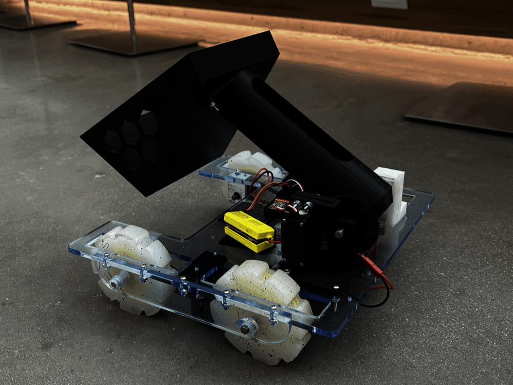
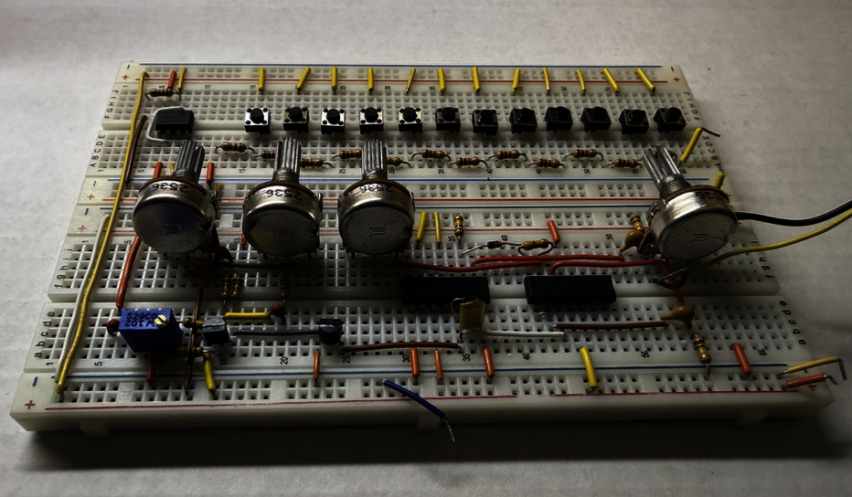
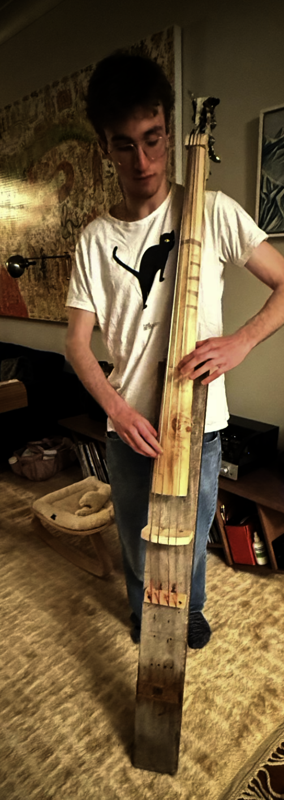
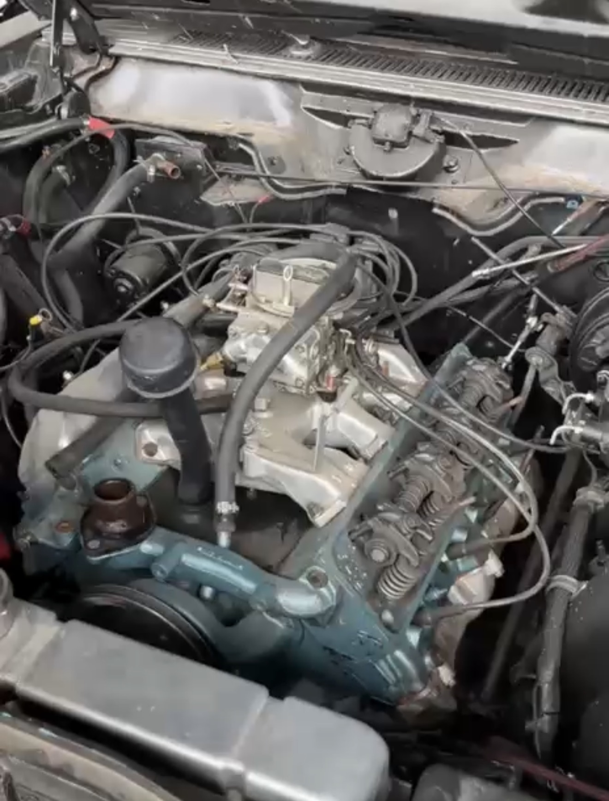
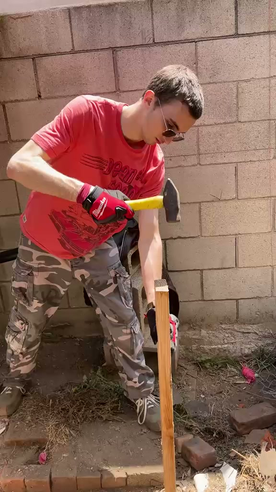

HA
Experience
Portfolio
About
Education
Experience
Portfolio
Contact
Portfolio
Things I've built.
Portfolio

Bumblebee
Competition robot built for Harvard ES51's Turf Wars

EuroRackingIt
Fully analog 12-note piano built for Harvard ES50
Jellyfish Motion Rig
Stepper-driven rig for jellyfish research at the Microrobotics Lab

Scratch-Built Double Bass
A four-string upright bass built from reclaimed lumber

Personal Vehicle Work
Carburetor rebuild and engine work on a V8

Plumbing & Construction
Pipe fitting, plumbing, and general construction work